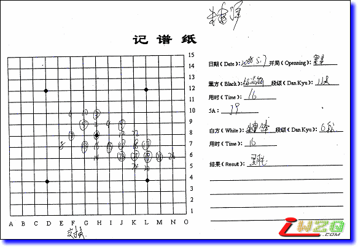
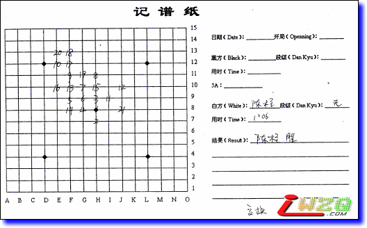
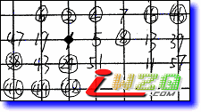
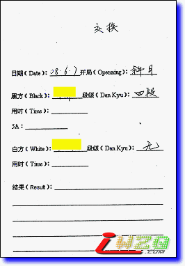
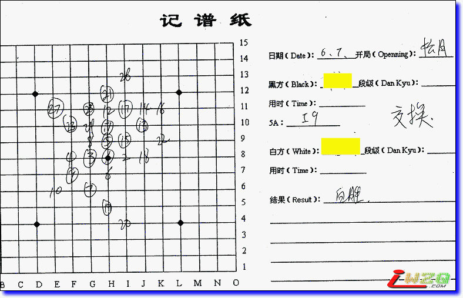

。
。这个帖子对事不对人！希望不会引起个人的不愉快，在此先打个招呼。
这几天在录入2008年全国团体赛的棋谱，说工作量大，也许有人不相信，照着棋谱纸打点就可以了呀。我们来看两张棋谱纸的内容

先看第一张棋谱，对局双方是杨春燕的女儿杨镒萌（幼儿园）和上海的高手朱建峰（6段），从棋谱上看是杨mm执黑，结果是黑胜，这里有个信息是“交换”，值得思考的是，最终的棋谱记录的是交换之前的黑白双方还是交换之后的？照我的理解，如果最终是朱建峰胜，最终是朱建峰执黑，那么棋谱纸上应该执黑中记录为朱建峰。

再看这张棋谱，够郁闷吧，自己一个人下？（最终参照ShowPost.asp?ThreadID=4030才知道对局者信息）。最终是执白者陈柱胜，而棋谱上明明是黑已经连五了，本局比赛也交换了。

这张棋谱，截图右上角和左下角有两个46，哎……
还有个别棋谱有涂改现象，个别出现两个12和13落点，搞成多分枝结构了。
按照比赛的惯例，棋谱右边的“黑方姓名”和“白方姓名”写的都是交换之前的。如果有交换，只须在旁边注明“交换”。
另外，“结果”一栏的标准写法应该是“获胜方的姓名+胜”，比如“朱建锋胜”，而不是容易让人引起误会的“黑胜”。
引用：
原文由 oddgod 发表于 2008-8-29 18:46:03 :按照比赛的惯例，棋谱右边的“黑方姓名”和“白方姓名”写的都是交换之前的。如果有交换，只须在旁边注明“交换”。
另外，“结果”一栏的标准写法应该是“获胜方的姓名+胜”，比如“朱建锋胜”，而不是容易让人引起误会的“黑胜”。
我觉得这种记谱方式有问题，既然我们使用的规则是三手交换，也就是有所谓的假先手，那么棋谱纸上的执黑和执白应该是最终的执黑和执白，这样才清楚，而是否交换同样也记录在案。
例如，爱五子棋谱库中的棋谱，如果是交换的，按照“惯例”执黑我填写“杨镒萌”，执白我填写“朱建峰”，交换我填写“是”，结果我写“朱建峰胜”或者“黑胜”，都令人看得有些纳闷。
而现在的棋谱是qplist.asp?qpid=2489&menu=4&returnmenu=2，可以一目了然，是朱建峰在下黑棋，结果是黑胜，而这局棋是交换过的，也就是说是杨镒萌开局的。多清楚。
嗯，现实比赛的记谱方式确实有一些问题，但是这“惯例”已经持续很多年了，想要改好像也不是那么容易，至少得说服裁判组……
另外，网上的“惯例”是不同于现实记谱的“惯例”的。网上公布棋谱的惯例就是像您说的那样，执黑方写朱建锋，标个交换，这样大家看着也方便。
两个完全相反的惯例无形当中增加棋谱录入工作的难度，希望将来的五子棋比赛在记谱方式上能有所改进。
下次让裁判负责录入棋谱，他们就知道其中的麻烦事了。

例如这张棋谱，此局交换郭了，那么最终到底谁胜？（可以看棋谱知道黑还是白胜）那到底最终谁执黑？

再看这张棋谱，也交换过了，最终是白胜，可从棋谱来看，明明是黑胜！也就是说最终谁执白的问题？真是乱呀。
说实话，如果我是对局者，最终这张棋谱纸是记录成绩的凭证吧，如果我输了完全可以让这局棋成绩无效而重新来过。因为这张棋谱纸根本就没有说清楚到底谁胜，如果每张棋谱纸都这样记录，哎，裁判不忙死？
棋谱纸应该是一目了然的！
五子棋胜负的条件跟棋谱里棋的内容是没有关系的.只要棋谱上没用五连或者长连,即使一方已经活4胜定,也不可以主观判定输赢.因为活4的这个人可以超时或者主动认输,甚至违例判负.
一般的胜负都是以裁判最终记录为准,裁判记录前会和选手核对.
正规的谱纸上记载的是假先假后方,真正的执黑执白要结合是否交换来看.所以上面只是谱纸的不正规而已,结合着是否交换看就清楚了.
另:正规比赛结束,输的一方要签字确认的,没有赖账的可能.
最后提醒一下录谱者,棋谱上记录的"棋"的内容,无关胜负~